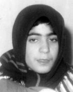

پذيرش > سایت نوشته ها > حکم اعدام بعد از 18 سال بلاتکليفي
 به خاطر جرم در 13 سالگي: به خاطر جرم در 13 سالگي:

 حکم اعدام بعد از 18 سال بلاتکليفي حکم اعدام بعد از 18 سال بلاتکليفي
31 تیر 1387 - روز آنلاین / آسیه امینی - نسخه قابل چاپ
دختري 9 ساله از يکي از روستاهاي اطراف فومن، به خاطر فقر خانواده و نيز به دليل ريشه داشتن اين تفکر که پسران خانواده مي توانند همراه پدر کار کنند اما دختران اگر در خانه بمانند، نان خوري اضافه اند، فرستاده مي شود به شهر رشت و در خانه مردي نسبتا جوان که با همسر و دو فرزندش زندگي مي کند، تا به عنوان کلفت ( خدمتکار) به کار بپردازد.
آنچه بعدها - چهار سال پس از آن- به سر اين دختر مي آيد و سرنوشت او را چنان رقم مي زند که از 13 سالگي تا 31 سالگي يعني 18 سال!- را بلاتکليف در زندان بگذراند و اين روزها پس از طي شدن اين همه سال دوباره مثل روز نخست حکم اعدام بگيرد، بدون دانستن شرايط اجتماعي و اقتصادي روزگار وي و بدون شناختن طبقات اجتماعي يک نسل گذشته کشور ما و بدون شناخت دقيق از ويژگي هاي اين طبقات ما را خيلي زود به بن بستي مي اندازد که همواره اين عدم شناخت از شرايط اجتماعي و صرفا تمسک جستن به قانون – که با پيش فرض عدم انعطاف پذير بودن- از همان آغاز تکليف را تعيين مي کند؛ اعتراف اوليه مبنا قرار مي گيرد و حکم بر اساس آن تا خط پاخر يک حرف را تکرار مي کند: "اعتراف کرده اي به قتل، پس اعدام مي شوي!"
همه آنهايي که نسلي قبل تر را از نظر نظام طبقاتي تجربه کرده اند مي دانند که مساله نظام طبقاتي تا همين دو دهه گذشته در کشور ما بسيار پر رنگ و تاثير گذار بر روابط اجتماعي بود. نويسنده اين مطلب به عنوان کسي که دستکم بخش عمده اي از کودکي اش در اين نظام طبقاتي گذشته است، اين داستان و پشت پرده آن را خوب مي شناسد. بنابراين به گمانم در بازخواني پرونده صغري نجف پور شناخت شرايط اجتماعي و اقتصادي خانواده هايي که به طور معمول در خانه هايشان خدمتکار يا خدمتکاراني حضور داشتند، ممکن است نتيجه اي متفاوت از حکم فعلي صغري پيش چشممان بگشايد.
بسياري از خانواده هايي که در تا همين يکي دو دهه پيش به اصطلاح دستشان به دهنشان مي رسيد – لازم هم نبود که حتما توان مالي بسيار بالايي داشته باشند – بر سياق گذشته اي که روابط طبقاتي در جامعه بر اساس خان و خان زادگي و رعايا تعيين مي شد، همچنان در خانه هايشان از حضور نوکرها و کلفتها براي رتق و فتق امور استفاده مي جستند. اين رسم يا نظم اجتماعي تا سالياني پس از انقلاب نيز برجا بود و اگر چه همچون گذشته ديگر خان و خان زاده اي بر جا نمانده بود و برجا نمانده، اما برخي از خانواده ها بويژه در مناطق شمالي ايران – حتا هنوز هم- در خانه يکي دو کلفت داشته و دارند که بر اساس نوع فعاليتشان، نوع جنسيتشان انتخاب مي شد. بر اين اساس معممولا خدمتکارهاي خانگي دختراني بودند از خانواده هاي پر جمعيت روستايي و بسياري از آنها از مناطق ييلاقي شمال به خدمتکاري فرستاده مي شدند.
و همه کساني که آن دوره را به ياد دارند، نيز به خاطر مي آورند که دختري که در خانه ارباب خود (که معمولا او را آقا خطاب مي کرد) به عنوان کلفت مشغول به کار مي شد، همواره چنان فرودست و گوش به فرمان بايد مي بود که به محض کوچکترين نارضايتي از سوي کارفرما يا همان "آقا" يا "خانم"، نرمترين تنبيه، بازگرداندن وي به نزد خانواده بود تا از سوي پدر و ساير اعضاي خانواده به عنوان دختري سرکش و نا فرمان، تنبيه شود. بسياري از دختران اين تبار، تنبيه بدني و مجازات تن را ترجيح مي دادند به اينکه دوباره به دامان فقر و پر خشونت خانواده برگردند و باز سرايي ديگر و خانواده اي ديگر که معلوم نبود بهتر از قبل باشد..
کلفت خانواده به جز گفتن "چشم" يا سکوت، اظهار نظر ديگري نمي دانست. کلفتها و نوکرها معمولا حق درس خواندن و با سواد شدن نداشتند و در مورد دختران معمولا حق الزحمه آنها به پدر خانواده پرداخت مي شد. در واقع دختران هم در خدمت خانواده هاي خود بودند زيرا خرجي رسان آنان محسوب مي شدند و هم کارگر خانه هاي مردم بودند.
دختران و زنان شمالي چه از طبقه خوانين و چه رعايا، کم نشنيده اند داستان تکراري تجاوز و استفاده جنسي از دخترکاني را که براي کار به خدمت گرفته مي شدند. من که از همان حوالي ام مي دانم که چه امر معمولي بوده است آن روزگار، شنيدن داستانهايي که شايد با آب و تابي بيش از واقع از سرگذشت دختران کشتزارهاي برنج، بوته هاي چاي، کمرگاه دشتها و مراتع شمال و نيز پستوي خانه ها و انبارهاي بزرگ اربابي، روايت مي کردند. نام اين دختران البته هرگز جايي به عنوان شاکي برده و شنيده نشد و همه اين روايتها تنها قصه هاي زمزمه واري بوده است که شايد سرگذشت بسياري را تغيير داده است.
صغري نيز از همين دسته بوده است. صغري نجف پور دختري بود که در 9 سالگي در خانه زن و مردي رشتي به کلفتي پذيرفته شد. وقتي او به عنوان کارگر در آن خانه مشغول به کار شد، تنها پنج سال از فرزند کوچک آن خانه يعني امير بزرگتر بود و تقريبا همبازي او محسوب مي شد.
امير در هشت سالگي بر اثر ضربه اي که به سر وي وارد شد، به قتل رسيد و جسد کوچکش در چاه خانه که در سنگي بزرگي داشت انداخته شد. تعفن ناشي از جسد، بالاخره جويندگان پسر گمشده را بر سر چاه کشاند و اولين مظنون، غريبه کوچک آن خانه يعني صغراي 13 ساله بود.
باز به تجربه هاي شخصي ام بر مي گردم. در خانه ما نيز در همان حوالي شمال، مانند بسياري از خانه هاي ديگر در حياط منزل چاه حفر شده بود. چاهي عميق با در سنگي بزرگ. من که 18 سال در آن خانه زندگي کردم هرگز به ياد ندارم توانسته باشم به تنهايي ان در سنگي بزرگ را بلند و جابجا کنم.
باري، صغرا متهم شد به قتل پسرک خانه و انگيزه قتل بعدها توسط ولي امير، حسادت عنوان شد. نمي دانم آيا در همان زمان توان صغري در جابجا کردن آن در سنگي سنجيده شد يا اينکه اقرار اوليه به قتل، براي اثبات جرم، کافي تشخيص داده شد.
چندي نگذشت که صغري دوباره دهان گشود و داستان ديگري روايت کرد. او اين بار از بارها و بارها مورد تجاوز جنسي قرار گرفتن، سخن گفت. و نيز تاکيد کرد که امير را همان کسي به قتل رسانده است که به من تجاوز مي کرد و علت قتل پسرک نيز همين بوده که ناگاه سرزده از راه رسيده و شاهد آنچه که نبايد مي ديد، بود.
بررسي ها شروع شد. صغري مورد معاينه قرار گرفت. و اين بار صغراي 13 ساله به جرم زنا! 100 ضربه شلاق را تحمل کرد، و کسي را که او به عنوان متجاوز معرفي کرده بود، به علت انکار زنا ( بخوانيد تجاوز) تبرئه کرد.
صغري محکوم به اعدام شد و چند سال بعد در 17 سالگي تا پاي چوبه دار رفت. مادر پسرک که شاکي پرونده بود توان اجراي حکم را نيافت و رضايت نيز نداد. اين نمايش سياه، بار ديگر در 21 سالگي صغري تکرار شد و باز به پايان نرسيد.
دو سال پيش که براي پي گيري پرونده دلارا دارابي به شهر رشت مي رفتم نخستين بار داستان او را جسته و گريخته شنيدم. بعد دانستم که نسرين ستوده داوطلبانه وکالت او را پذيرفته است. اما همواره در پرداختن به اخبار زندگي صغري اين هراس وجود داشت که "شايد بشود از مادر، رضايت گرفت و پرونده را خاتمه يافته تلقي کرد". اما اين روزها مي شنويم که چنين نشده است. پرونده صغري با وجود بازنگري در هيات نظارت، دوباره به نقطه اول و آخر رسيده است. او محکوم به اعدام است زيرا در اقرار اوليه اش قتل را به گردن گرفته است. قانون انعطاف ناپذير است و دانستن پرده هاي ديگر اين زندگي شايد که در اين آخرين گامها دريچه اي جديد بگشايد به روي دخترکي که در بچگي پير شد.
و باقي اين ماجرا را از زبان نسرين ستوده وکيل صغري بخوانيد:
مي خواهم از صد ضربه شلاقي شروع کنم که به جرم زنا بر بدن صغري کوفته شد. صغري از 9 سالگي خدمتکار خانه اي شد که به گفته خودش دائم مورد تجاوز قرار مي گرفت. اين قابل پذيرش است که دختري که همه مسووليتش به صاحبان آن خانه سپرده شده، به جرم "زنا" و نه تجاوز، مجازات شود؟
ببينيد از نظر قانوني صغراي ده ساله، مسووليت کيفري دارد. بنابراين ممکن است از نظر اجتماعي يا از نظر حقوق بين الملل، اين موضوع قابل پذيرش نباشد، اما از نظر قانون مجازات اسلامي که صغري به استناد به آن مجازات شده، او مسووليت کيفري داشته و عمل تجاوز هم به دليل انکار مرد، ثابت نشد.
صغري هم از اين مرد نام نبرده؟
چرا او وي را معرفي کرد ولي من به خاطر حفظ منافع موکلم از بردن نام او معذورم. ضمن اينکه ادعاي صغري در دادگاه ثابت نشد. البته اين سوال نيز پاسخ داده نشد که پس شريک او چه کسي بوده! بالاخره عمل زنا يک عمل يک نفره که نيست و چطور ممکن است که يک طرف بر اثر اقرار، مجازات شود و طرف ديگر همان عمل بر اساس انکار تبرئه؟!
و در مورد قتل، آيا انگيزه قتل مي توانسته حسادت باشد؟
ببينيد بعضي چيزها بايد با واقعيت هم جور باشد. مقتول پسري 8 ساله بوده و صغري دختر ريز جثه اي 13 ساله. چطور ممکن است او بتواند اين پسر را به قتل برساند و او ر ا تا چاه ببرد، در سنگي بزرگ چاه را بردارد و او رها کرده و در را دوباره بگذارد ( و همه اين کارها در فرصتي کوتاه انجام شود) ! اين داستان منطقي به نظر نمي آيد. اگر حتي صغري مقتول را هل داده بود – که خودش بعدها گفته من اين کار را نکردم – باز هم قتل عمد محسوب نمي شد و يک اتفاق بود وباز اگر هم قتل عمد محسوب مي شد، حرف آخر اين است که او 13 ساله بود و طبق قوانيني بين المللي لازم الاجرا، نبايد حکم اعدام دريافت کند.
اما او در عين حال همه اينها را هم انکار کرده و گفته است که قاتل به من گفت که تو بگو کار من بوده و من بزودي تو را از زندان در خواهم آورد. داستاني که مي دانيم هرگز عملي نشد.
چرا همه جا تنها نام مادر امير به عنوان شاکي پرونده آورده شده؟ آيا پدر او شکايتي ندارد؟
سوابق پرونده نشان از پي گيري بيشتر از سوي مادر دارد، اما اين که چرا چنين بوده است را بايد از خود پدر پرسيد.
آيا آنها فرزندان ديگري نيز داشته اند؟
بله امير يک برادر داشت و يک فرزند پسر ديگر نيز در سالهاي بعد از مرگ او به دنيا آمد.
در اين سالها آيا خانواده صغري از او حمايت کردند؟ آيا آنها پي گير پرونده بودند؟
نه به اندازه اي که بايد پي گير مي بودند.
چرا؟ آيا فکر مي کنيد فقر عامل اصلي اين عدم پي گيري بوده است؟
نه الان آنها آنقدرها هم فقير محسوب نمي شوند. زندگي تقريبا متوسطي دارند. ظاهرا آن زمانها يعني دوران بچگي صغري فقير بوده اند. من يک بار از آنها درخواست کردم براي پي گيري پرونده بيايند که مادر و برادر و زن برادرش آمدند. اما پدر نيامد.
چرا؟
اظهار کردند که ناراحتي معده دارد. ولي به نظر مي رسيد که دختر بودن (باکره بودن) صغري برايش خيلي مهم بوده است. پيش داوري نکنيم. ولي واقعا جاي سوال دارد. اين پدر فرزندان پسر نيز داشته است. اما دختر کوچکش را براي کار به شهر مي فرستاده و پسرانش را نزد خود نگاه مي داشته. و با اين حال دختر ماندن فرزندش برايش اين قدر اهميت دارد! وقتي که صغري 17 ساله بود و پاي چوبه دار مي رفت وصيت نامه اي خطاب به پدرش نوشت. نوشت تو نگذاشتي من از زندگي ام خيري ببينم، ولي به برادران و خواهرانم توصيه مي کنم که خوب زندگي کنند.
روزآنلاین
ارسال به
بالاترین
،
توییتر
،
فریندفید
،
فیسبوک
در همين بخش :
 یک خبر تلخ؟ یک قانونشکنی؟ یک تصمیم بخشنامهای جدید؟ یک خبر تلخ؟ یک قانونشکنی؟ یک تصمیم بخشنامهای جدید؟
چرا بایست به سکسوالیته پرداخت؟ / نفیسه آزاد
آزارجنسی خانگی؛ «قربانی» نه، «نجات یافته»
زنان، بزرگترین بازندگان بهار عرب
سانسور از دیدگاه جنسیتی/الهه امانی
ديگر بخش ها :
طرح یک میلیون امضا
|
مقالات
|
سایت نوشته ها
|
اخبار
|
گزارش كمپين
|
گفت و گو
|
علیه سکوت
|
كوچه به كوچه
|
نامه های شما
|
گزارش ویژه
|
گفتگو با اعضا
|
ویژه سالگرد کمپین
|
تصویر برابری
|
دل آرام علی
|
تریبون
|
مقالات
|
تاریخ شفاهی
|
خارج از چارچوب
|
کتابخانه
|
درباره کمپین
|
کمپین در شهرها
|
کمپین در بند
|
صدای تغییر
|
ویژه 22 خرداد
|
لایحه حمایت از خانواده
|
گالری
|
عشا مومنی
|
امیر یعقوبعلی
|
خدیجه مقدم
|
راحله عسگری زاده و نسیم خسروی
|
پروین اردلان،جلوه جواهری، مریم حسین خواه، ناهید کشاورز
|
زینب پیغمبرزاده
|
سعیده امین، سارا ایمانیان، محبوبه حسین زاده، ناهید کشاورز و همایون نامی
|
احترام شادفر
|
نسیم سرابندی زاده،فاطمه دهدشتی
|
وبلاگ مهمان
|
پرونده خرم آباد
|
دستگیری ها
|
مریم مالک
|
پرستو اللهیاری
|
مهرنوش اعتمادی
|
سمیه رشیدی
|
Other Languages
|
همراهان
|
«فراخوان کمپین ده روز با بهاره هدایت»
| English
|